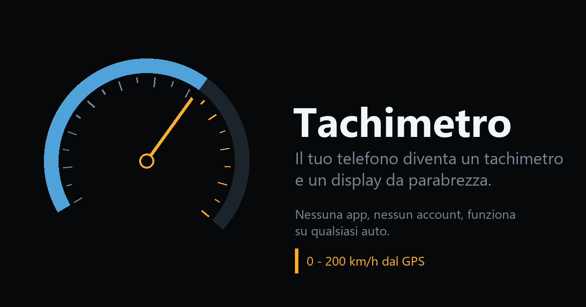

Il telefono diventa un tachimetro.
Un quadrante da 0 a 200 km/h che legge il GPS, e una modalità specchiata per appoggiare il telefono sul cruscotto e leggere la velocità riflessa sul parabrezza, senza staccare gli occhi dalla strada.
Aprilo adesso
Cosa fa
- Velocità dal GPS, quindi funziona su qualsiasi auto, anche a noleggio, anche in moto o in bicicletta.
- Modalità specchiata: il testo ribaltato si legge dritto nel riflesso del parabrezza. È un display a testa alta senza comprare niente.
- Chilometri, media e massima del viaggio in corso, azzerabili con un tocco.
- Lo schermo resta acceso finché è in funzione.
- Funziona senza rete: una volta aperto, resta disponibile anche in galleria e dove non prende.
Come tenerlo a portata
Dal menu del browser scegli Aggiungi a schermata Home: si apre a tutto schermo, in orizzontale, con la sua icona, come un’app qualsiasi.
Cosa non fa
Non raccoglie niente e non manda niente a nessuno: la posizione resta nel telefono e serve solo a calcolare la velocità. Non c’è un server dietro, non ci sono cookie e non c’è niente da accettare.
Il GPS è preciso ma non è strumento omologato: per le multe fa fede il tachimetro dell’auto, che per legge non può segnare meno del vero. E il telefono va in un supporto, non in mano.
In English
Your phone becomes a speedometer, 0 to 200 km/h, read from GPS. Turn on mirror mode, rest the phone on the dashboard, and read your speed reflected in the windscreen: a head-up display for free. No app, no account, no tracking, works offline and in any car. Open it.